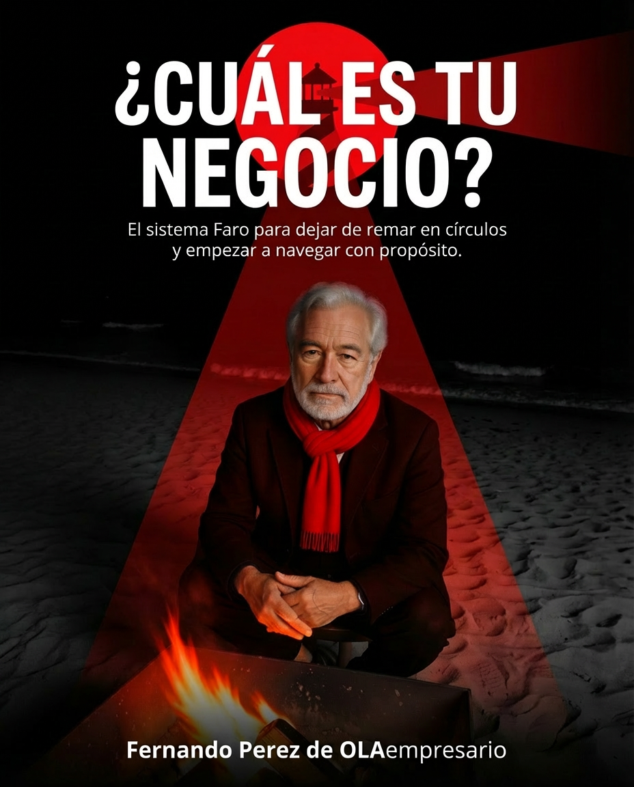

Semanas 1 a 4 · Ver y priorizar
Sabes dónde se va tu dinero.
Cierras con tres fugas cuantificadas, una línea base de tu margen y una primera corrección implementada con tu coach.
OLAempresario no es una escuela de negocios. Es un sistema de rescate para emprendedores que ya están en el mar y no saben a dónde están remando. Esta guía define el Sistema Faro: su voz, su identidad, sus reglas.
OLAempresario nace mirando surfistas y viendo emprendedores. El pescador rema con fuerza contra el mar. El surfista lo lee. Esa diferencia —timing— es la única que separa al empresario agotado del empresario maestro.
Sale al mar con fuerza. Rema, suda, lanza redes, vuelve cansado. Si el mar no le da peces, rema más duro.
Así opera el 90% de los emprendedores: esfuerzo bruto contra un mar que no se pelea. Confunde actividad con avance.
No pelea con el mar: lo lee. Observa la serie, mide la corriente, espera. Cuando llega su ola, entra en el momento preciso.
Eso se llama timing. Es la diferencia entre caer y volar. Y es lo que un buen empresario hace con el mercado.
Antes de remar, mirar. Diagnosticar antes de prescribir. Sin lectura del mar, toda brazada es cansancio elegante.
El dueño es el capitán. El Faro no rescata dos veces. Nadie salva al que no decide subir al bote.
Imperfecto pero en movimiento. El negocio perfecto que no arranca vale cero. Primero fundamentos, después escalar.
Misión
Que dejen de remar contra el mercado y aprendan a leerlo.
Visión
No el más popular. El más útil. El que se queda cuando los demás se van.
Promesa
No es abandonar el barco. Es dejar de ser su cuello de botella. Que fluya con la ola aunque el capitán descanse.
Rema con fuerza. En círculos. Confunde actividad con avance.
Ya fue rescatado. Ve el Faro. Empieza a orientarse.
Tiene timing. Lee la ola. Fluye con propósito.
"No nades más fuerte. Mira mejor."
El Faro es el personaje-voz. No es un logo, no es una mascota, no es Fernando. Es el mentor que le habla al navegante cuando se está ahogando en operaciones, dudas o ruido.
01 · Perfil
El Sabio con alma de Viejo Lobo de Mar. Atemporal. Ha visto cerrar empresas. Ha visto abrir otras. No se emociona fácil.
02 · Temperatura
Directo, sobrio, firme. Frío cuando el negocio lo exige, cálido cuando el humano lo necesita. Nunca tibio.
03 · Función
Mentor · Auditor interno · Guardián del sistema. Dicta sentencia y receta herbal en el mismo párrafo.
El Faro no siempre fue faro. Fue primero la voz que aparece cuando el pescador ya no puede con sus propias brazadas. En el libro, el Faro llega pilotando un helicóptero sobre un mar que iba a tragarse a Santi. Lo rescata, lo seca, lo sienta en la arena y le dice una frase que le queda tatuada para siempre.
"El mar no premia al que se mueve. Premia al que se orienta"
No una torre inmóvil: una presencia activa que aparece cuando hace falta, que diagnostica antes de aconsejar, que corrige sin humillar.
Es rescatista cuando el pescador se ahoga. Piloto cuando el navegante necesita altura. Mentor cuando el surfista empieza a leer su propia ola.
"El Faro no te rescata dos veces. Te despierta una vez y te enseña a leer la ola."
"Respira. Ordena. Decide." No ruega, no sugiere, no implora.
Una metáfora marítima por párrafo, máximo. Si necesitas dos, sobra una.
Puntos firmes. Un punto al final pesa más que tres adjetivos.
Navegante, empresario, capitán, OLA empresario. Nunca lead, cliente, consumidor.
El Faro nunca receta sin preguntar. Primero el dolor, luego la herramienta.
El logo es declaración: OLA en peso máximo, empresario como firma operativa, y un punto rojo — el Faro — que cierra la frase. Nunca más, nunca menos.
Dos puntos rojos cancelan el mensaje.
Nunca elíptico, ni con bordes, ni en gradiente.
Nunca en listas largas. Eso diluye su peso.
Sustituye al punto final en frases signature.
Por debajo desaparece. Por encima resuena.
Tres colores. Si se suma, se diluye. La paleta es mínima por decisión, no por accidente. 80% negro · 15% blanco · 5% rojo. El rojo nunca es protagonista, siempre es señal.
Sans serif en peso máximo para titulares. Regular para cuerpo. Mono para meta. Nunca script, nunca decorativa, nunca imitando autógrafo. Inter es la familia oficial; Arial o Helvetica como sistema.
OLA
No nades más fuerte. Mira mejor. Tu caos es un impuesto silencioso. La disciplina es tu nuevo marketing. El negocio perfecto que no arranca vale cero.
// FASE F1 · DIAGNÓSTICO BRUTAL · OLA EMPRESARIO · V 1.0
La voz es cálida pero exigente. Trata al navegante como profesional. La empatía se demuestra con precisión, no con lágrimas. Si el Faro acierta el diagnóstico, eso ya es empatía probada.
Términos que solo existen en el universo OLAempresario. Son el ADN. No se traducen, no se sustituyen.
La metáfora central de OLAempresario no es el mar genérico. Es específica, está escrita, y tiene protagonista: Santi, el personaje del libro ¿Cuál es tu negocio? Su arco es el que vive todo OLA empresario.
Santi sale al mar antes del amanecer. Rema, lanza redes, vuelve cansado. Cree que si uno le da más al mar, el mar devuelve más. Su fe es puro músculo.
Una ola lo arranca del bote. Nada con fuerza, con rabia, con miedo. Horas después entiende lo que el ego negaba: ha estado nadando en círculos.
Entre la niebla aparece un helicóptero. Lo pilota el Faro. Santi llega a tierra destrozado. El Faro lo observa sin urgencia y le dice una sola frase.
Santi se recupera en tierra. Ya no quiere pescar: quiere entender las olas. Descubre que el mar no se domina — se interpreta. Deja de ser pescador. Es navegante.
Aprende a montar una ola. La primera vez que se levanta sobre la tabla, entiende el timing. Una ola mal tomada es caída. Una leída con timing es vuelo.
"Cuando aprendí a pescar, buscaba peces. Cuando aprendí a surfear, encontré propósito."
— Santi, ya surfista
Meses después, el Faro lo visita y lo encuentra de pie sobre su tabla.
— Veo que ya no nadas, le dice.
— No. Ahora escucho.
Esa es la transformación que promete OLAempresario. El pescador sin rumbo es el dueño sin claridad. El surfista con timing es el empresario maestro. El Faro es la voz que hace posible el tránsito.
Saber cuándo entrar. Ni una brazada antes, ni una después.
Cuándo lanzar, cuándo subir precios, cuándo cerrar una línea.
Cuándo cobrar, cuándo reservar, cuándo reinvertir.
Cuándo subir el ticket, cuándo callar, cuándo ofrecer el upsell.
Cuándo contratar, cuándo corregir, cuándo dejar ir.
"Cada vez que un emprendedor levanta la cabeza, deja de ser pescador y empieza a ser surfista"
Dos avatares principales. No son competencia entre sí: son etapas distintas del mismo viaje. El Faro los ve a ambos, pero les habla diferente.
Paralizado por miedo a perder dinero, a fallar en público, a que "sea tarde". Confunde investigación con acción. Tiene imaginación abundante y sistema cero.
"No estoy listo." · "No tengo el capital." · "No sé por dónde empezar." · "Si fracaso, ¿qué van a decir?"
Trabaja 10–14 horas al día apagando fuegos. Llama a eso "estar ocupado". Sabe que factura; no sabe si gana. Si se enferma una semana, el negocio se tambalea.
"Ya vendemos, lo que falta es escalar." · "Cuando pase este mes me organizo." · "El problema es que mi equipo no rinde." · "Me faltan clientes."
Tan importante como saber a quién atendemos, es saber a quién no. Estos perfiles no encajan con el Sistema Faro.
Quiere fórmula mágica en 30 días. El Faro exige disciplina, no suerte.
Compra todo, aplica nada. Sin acción, no hay resultados.
Mercado, economía, equipo, gobierno. No hay capitán que admita timón.
Nuestro rango es $0–$1M. Más arriba hay consultorías mejores.
Aquí hay herramientas, no aplausos. El Faro ilumina; no consuela.
Con Carta Náutica identificas tus tres fugas y eliges qué corregir primero. En Primera OLA llevas esas decisiones al negocio durante 12 semanas, recuperas margen y mides cuánto de tu inversión has recuperado.
Entiende cuánto te queda, ponle monto a las tres fugas de tu negocio y sal con una primera decisión para recuperar dinero.
Cómo puedes recuperar Carta Náutica
Si al aplicar el plan ahorras $200 en gastos o desperdicios y consigues $150 de margen adicional en un mes, acumulas $350 USD de mejora neta. Con ese resultado cubres el precio regular de tu Carta.
Descuenta primero lo que cuesta implementar las correcciones. Si compraste con una promoción, la meta de recuperación es el importe que realmente pagaste.
Es un ejemplo ilustrativo, sujeto a las fugas detectadas y a lo que ejecutes. El diagnóstico entrega el mapa y el plan; la recuperación llega con las mejoras reales del negocio.
Ayudamos a dueños de negocios a frenar sus principales fugas de dinero, recuperar su margen neto y saber exactamente cuánto les queda limpio en 90 días, sin planillas inentendibles ni depender de un contador tradicional.
El Sistema FARO es el método; en Primera OLA trabajas F1 · Descubrimiento y F2 · Fundamentos. El Faro IA es tu asistente entre sesiones.
Elegir contado o 3 cuotas →Semanas 1 a 4 · Ver y priorizar
Cierras con tres fugas cuantificadas, una línea base de tu margen y una primera corrección implementada con tu coach.
Semanas 5 a 8 · Corregir
Aplicas ajustes en precios, costos y cobros. Registras el ahorro, el margen adicional y los cambios en caja para revisar qué funciona.
Semanas 9 a 12 · Medir
Comparas tu utilidad con el inicio, calculas cuánto de la inversión recuperaste y defines las reglas para sostener lo que funcionó.
Incluido en Primera OLA · Contado y 3 cuotas
Aprende a instalar tu Arnés de IA: una base de trabajo con la información, las reglas, la memoria y las tareas de tu empresa. Apóyate en la IA para avanzar con tu equipo, liberar tiempo y depender menos de hacerlo todo tú.
Es una iniciativa en desarrollo. Empieza con la metodología y la guía de aplicación; su plataforma independiente es una evolución futura y todavía no está lanzada.
Semanas 1 a 4
Prepara resúmenes de costos y preguntas sobre las fugas usando tus datos de Carta Náutica. Valida con tu coach antes de elegir la primera corrección.
Semanas 5 a 8
Documenta procesos, compara costos y precios y prepara seguimientos de cobros o ventas con ayuda de IA. Tú apruebas las decisiones y las llevas al negocio.
Semanas 9 a 12
Organiza la revisión semanal, compara resultados y deja instrucciones que tu equipo pueda repetir. Registra ahorro, margen y tiempo liberado.
Sin cargo adicional durante tu acceso vigente a Primera OLA. Complementa las 18 tareas FARO y tus sesiones con el coach. Las herramientas, suscripciones y consumo de IA que elijas se pagan aparte.
Para recuperar la inversión cuentan el ahorro y margen adicional reales, descontando implementación y costos de IA. El tiempo liberado se mide aparte; solo cuenta como dinero recuperado cuando produce ahorro o margen comprobable, sin duplicarlo.
Conocer Empresario con IA y su aplicación →Cómo puedes recuperar Primera OLA
Supongamos estas mejoras reales de cada mes, netas de implementación y antes de descontar el costo del programa:
| Mes | Mejora neta del mes | Acumulado |
|---|---|---|
| Mes 1 | $300 | $300 |
| Mes 2 | $650 | $950 |
| Mes 3 | $1,000 | $1,950 |
Es un escenario ilustrativo. El resultado puede ser menor, mayor o tardar más; depende de tus fugas y de las correcciones que ejecutes. Lo revisas en tus 12 sesiones. Las cuotas se cobran al ingresar, al mes y a los dos meses, aunque la recuperación llegue después.
Cobrar una venta pendiente mejora tu caja y se mide aparte: esa venta ya estaba registrada como ingreso. Así evitamos contar dos veces la misma ganancia.
Si ya compraste Carta Náutica
Si tu crédito de $350 está vigente, pagas $1,400 de contado o $300 al ingresar y dos pagos de $650 (total pendiente: $1,600). Se aplica una vez, con el mismo correo, durante los 45 días posteriores a la publicación de tu Carta.
Para medir la recuperación del recorrido completo, suma lo que ya pagaste por Carta Náutica a lo que inviertes ahora. El crédito reduce lo pendiente por pagar; el ahorro y margen adicional del negocio son los que recuperan tu inversión.
Los dos módulos por el precio oficial del CRM. Desde el segundo mes puedes sumarlos para dar seguimiento a tus oportunidades y revisar los resultados de tu publicidad.
Oportunidades con seguimiento registrado y claridad sobre las ventas que deja tu publicidad. Para cubrir los $249 mensuales, necesitas al menos $249 de margen adicional ese mes, después de descontar publicidad y costos de implementación, antes de pagar los módulos. El resultado depende del uso y de tus ventas reales.
El diagnóstico valorado en $500 orienta la implementación; ese valor no se cuenta como dinero recuperado. Esta promoción es opcional y se contrata por separado de Primera OLA.
El Sistema Faro son cinco fases. Ninguna se salta. Cada una desbloquea herramientas, acompañamiento y nivel de decisión. No es un curso: es una ruta.
Claridad brutal de situación actual. Cero filtros, cero consuelo.
Construir base sólida y repetible. Lo invisible que sostiene todo.
Sistemas reales que reducen la dependencia del dueño.
Más con menos. Limpiar grasa y reforzar palancas.
Libertad real del dueño. Negocio que crece sin él.
Ejemplos vivos del sistema aplicado: post de redes, newsletter, tarjetas, podcast. No son reglas rígidas, son el ADN en acción.
La pieza ancla del universo OLA. El libro de Fernando Pérez que abre la conversación con todo navegante antes de entrar al sistema. Diagnóstico brutal, con mapa.

Un libro que no motiva: diagnostica. Presenta la metodología F·A·R·O al emprendedor que ya está en el mar y no sabe hacia dónde rema. Cierre natural: la llamada diagnóstico.
"No vendemos humo. Vendemos disciplina con mapa."
Línea gráfica de papelería: hoja membretada, carpeta, sobre, libreta y bolígrafo. Mismo ADN — negro, blanco y un punto rojo como firma visual. Sin adornos, sin gradientes, sin ruido.
Este documento deja por escrito lo que ya conversamos en el diagnóstico: dónde está el negocio hoy, qué ola viene, y qué sigue. No es un contrato: es una brújula.
Si en 30 días no estás remando con más dirección, algo falló en el diagnóstico. Lo revisamos. No hay letras chicas.
Uniformes y merch elegante — negro dominante, punto rojo como firma. Sin tipografía saturada ni ilustraciones. Calidad sobre cantidad: cada pieza es un recordatorio del sistema.
Este documento solo sirve si se aplica. Aquí quedan las reglas concretas para cualquier pieza: post, landing, email, video, podcast o presentación.
"OLA empresario, respira." · "OLA empresario, mira tus números." · "OLA empresario, suelta amarras."
Corta. Cada punto es una decisión.
Nada de "¿te sientes perdido?", "sé lo difícil que es", "yo también lloré". La empatía se demuestra con precisión. Si el Faro acierta el diagnóstico, eso ya es empatía probada.
Cada pieza termina con una acción verificable o una puerta del sistema. No se diagnostica para dejar al navegante en el vacío.
En piezas insignia, el último elemento es el punto rojo, solo, centrado. Es la firma del Faro.
Fondos negros sólidos o blancos planos.
Gradientes, degradados, fondos con fotos.
Sans serif en bold para titulares.
Scripts, serif decorativas, tipografías "motivacionales".
Espacio en blanco abundante. Respiro.
Composiciones saturadas con íconos, emojis, decoración.
Un solo punto rojo como acento.
Múltiples elementos rojos que diluyen el símbolo.
Fotos en blanco y negro de alto contraste.
Fotos con filtros, vintage, sepia o pasteles.
Datos y números como titular cuando procede.
Frases motivacionales genéricas sin sustancia.
"La marca no grita. El Faro orienta. Y quien se orienta, llega."
Monta
la ola
OLAempresario · Brand Kit · V 1.0 · 2026 · olaempresario.com